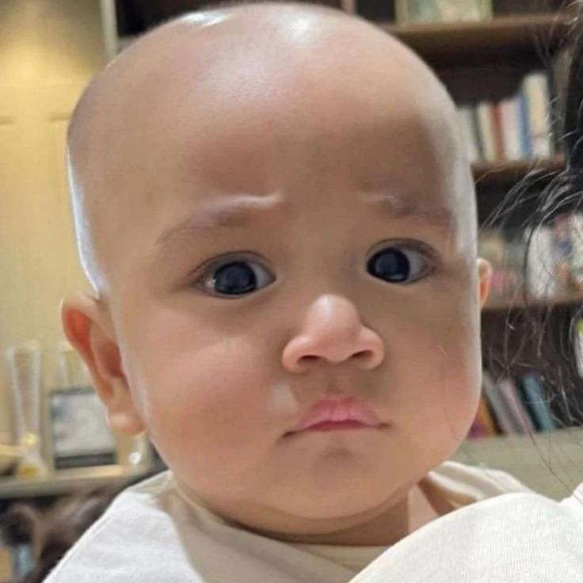

KAGET BUANGET LOCH
Kira-kira begini ekspresi cipung saat dia tau baru lahir udah jadi horang kayaaaa

HAH?
Nah kalo ini ekspresi cipung waktu denger banyak orang yang pada adu nasib
HAPPY
Ini moment cipung pas nyobain wig buat cosplay jadi batok kelapa gess, happy banget pokoknyaa
HUEHUE
Dan ini ekspresi sedih cipung waktu liat schedulenya padat seperti jalanan ibu kota